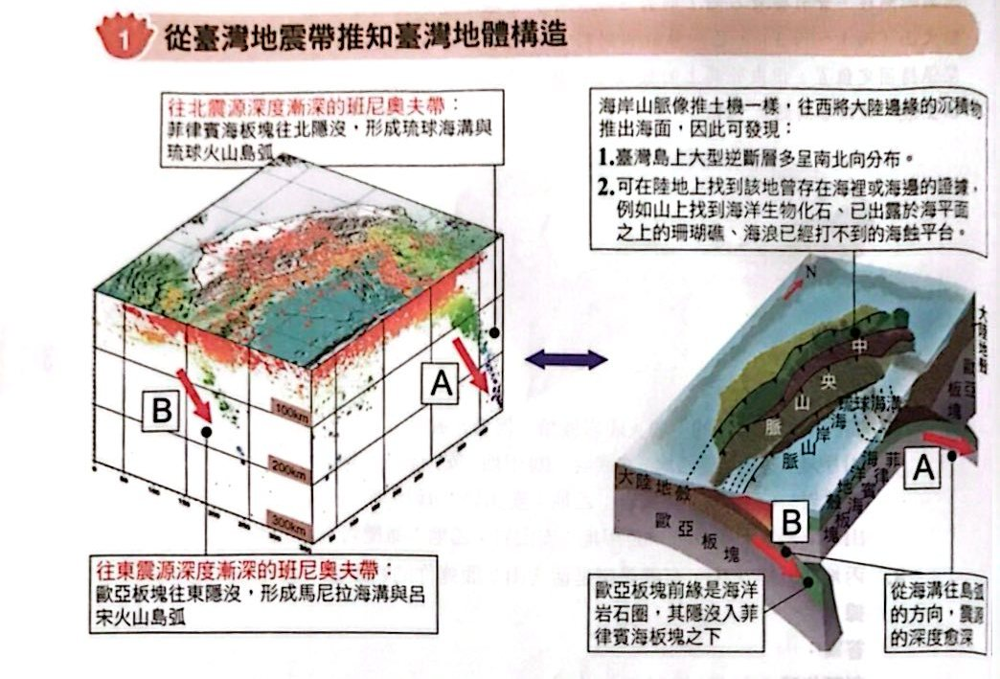
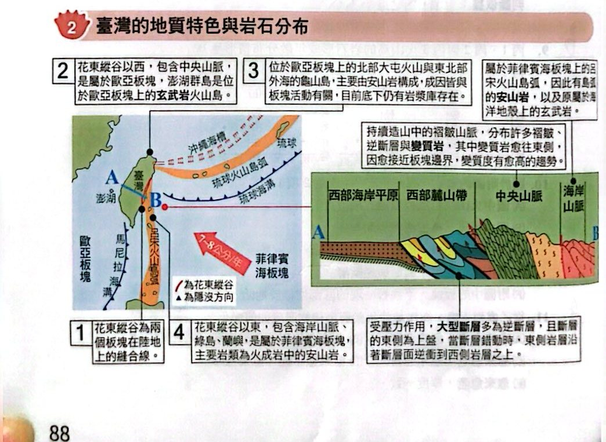

從臺灣地震帶推知臺灣地體構造

臺灣的兩條班尼奧夫帶與地體構造（講義 p.88）
臺灣的地質特色與岩石分布

臺灣的地質特色與岩石分布（講義 p.88）
小試身手
看答案與詳解收起
答(C) 歐亞板塊，呂宋火山島弧
解這題在考什麼：圖一的（I）在臺灣西南方＝馬尼拉側的班尼奧夫帶；（II）在東北方＝琉球側。
- （I）：歐亞板塊往東隱沒到菲律賓海板塊之下，形成馬尼拉海溝與呂宋火山島弧。
- 所以主要是歐亞板塊隱沒造成，形成的火山島弧為呂宋火山島弧 ⇒ (C)。
看答案與詳解收起
答(C) 菲律賓海板塊，安山岩
解這題在考什麼：乙處＝臺灣北端的大屯火山。
- 臺灣東北部是菲律賓海板塊往北隱沒到歐亞板塊之下 ⇒ 隱沒帶（聚合型邊界）生成安山岩質火成岩（大屯火山、龜山島）。
- 所以與菲律賓海板塊隱沒有關，岩石為安山岩 ⇒ (C)。
看答案與詳解收起
答(E) 僅 abd
解這題在考什麼：圖二各區：甲＝蘭嶼（南方外海）、乙＝大屯火山（北端）、丙＝海岸山脈、丁＝中央山脈（變質岩）、戊＝西部（沉積岩區）、己＝澎湖。
- (a) ○ 甲處（蘭嶼、綠島）火成岩主要為安山岩。
- (b) ○ 丙處（海岸山脈）位於菲律賓海板塊。
- (c) ✗ 丁處（中央山脈）主要為變質岩，但東側變質度高於西側（愈靠近板塊邊界變質度愈高）。
- (d) ○ 戊處（西部）有逆斷層分布。
- (e) ✗ 西部地震帶的震源不是最深；東部與東北部（隱沒帶）的震源較深。
- (f) ✗ 己處（澎湖）不在板塊邊界，其玄武岩屬於板塊內部火山。
- 正確的有 a、b、d ⇒ (E)。
看答案與詳解收起
答(B) 逆斷層
解這題在考什麼：臺灣因板塊擠壓，大型斷層多為逆斷層，且斷層面東側為上盤。
- 剖面圖顯示彰化斷層、車籠埔斷層、雙冬斷層，東側岩層逆衝到西側之上。
- 所以雙冬斷層屬於逆斷層。
看答案與詳解收起
答(E)
解這題在考什麼：聚合型邊界的特徵：有海溝、隱沒帶地震、安山岩、造山運動。
- (A) ✗ 玄武岩也可能是熱點或張裂生成（例如澎湖），不能證明聚合。
- (B) ✗ 地震也可能出現在張裂型或錯動型邊界。
- (C) ✗ 地層下陷是超抽地下水等人為或沉積因素。
- (D) ✗ 砂岩是一般沉積岩，與板塊邊界類型無關。
- (E) ○ 海溝是板塊隱沒的地形證據 ⇒ 臺灣東部與南部外海有海溝（琉球海溝、馬尼拉海溝），可證明位於聚合型邊界。
看答案與詳解收起
答(C) 3 項
解這題在考什麼：逐一判斷五個推論。
- (甲) ○ 澎湖群島不在板塊邊界，但岩石主要是玄武岩 ⇒ 由火山活動形成。
- (乙) ○ 板塊從海溝向下隱沒，震源深度愈來愈深：海溝淺源，火山島弧處有機會測到中源地震。
- (丙) ✗ 中央山脈的海洋化石是因為板塊擠壓、地層抬升，不是海平面升到那麼高。
- (丁) ✗ 臺灣南方的歐亞板塊前緣是海洋岩石圈，可以隱沒到菲律賓海板塊之下（馬尼拉海溝）；歐亞板塊並不是只有大陸型岩石圈。
- (戊) ○ 花東縱谷是兩個板塊的縫合帶，可發現兩個板塊的物質與複雜的地質構造。
- 正確的有甲、乙、戊 ⇒ 3 項 (C)。